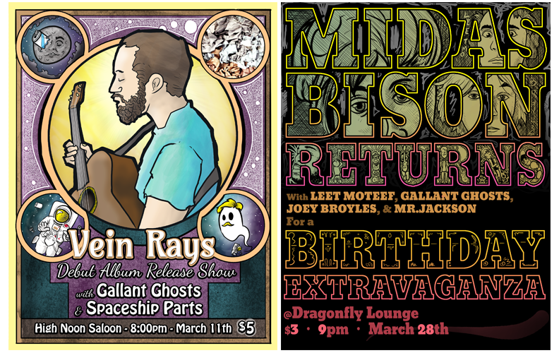

/ Illustrations / Band Posters, and general graphics process

Besides the drawings and maps, I also have a blast playing in the band Gallant Ghosts. I write songs for the band, sing, and play acoustic rhythm guitar. Here's one of our first tunes, lovingly recorded in my basement, fueld by Hamm's.
But my other main facet is more or less the art director. I make buttons, web graphics, song covers, and most visibly- posters for the shows. Over time, they've gotten more elaborate. While I check in with the other band's if they have any input, I'm more or less completely left to my devices.
Here's a collection of the one's I've done to date.



And here's some images showing the general process.


2-22-2015